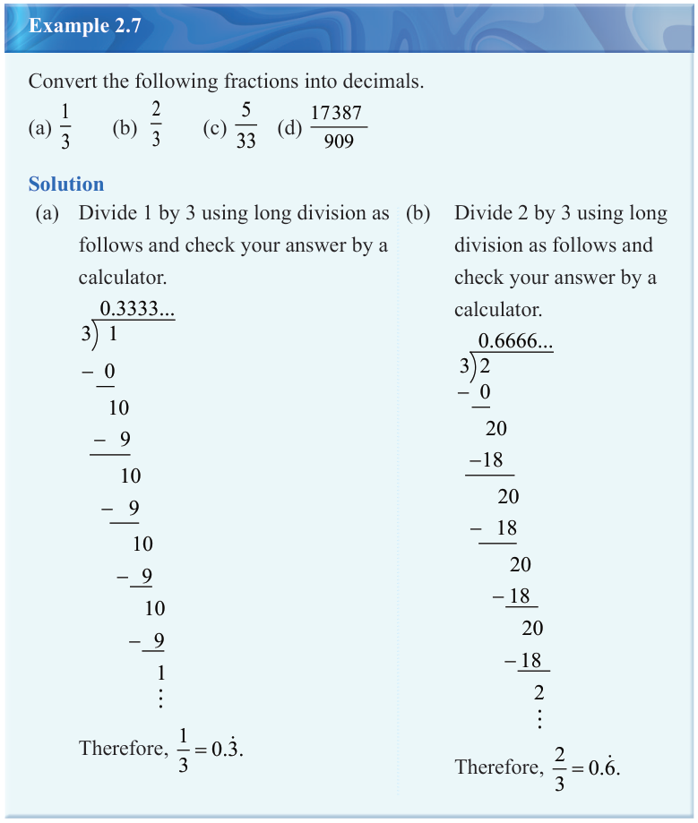

Converting fractions into repeating decimals
A fraction can be converted into a decimal by performing a long division. In this process, some fractions will be equivalent to either terminating or non-terminating decimals. If the resulting decimal is a non-terminating with recurring decimals, the repeating digits are indicated by the repeating decimal’s notation.

Example 2.7
Convert the following fractions into decimals.
Solution
(a) Divide 1 by 3 using long division as follows and check your answer by a calculator.
-\,0
10
-\,9
10
-\,9
10
-\,9
10
-\,9
1\,\vdots
(b) Divide 2 by 3 using long division as follows and check your answer by a calculator.
-\,0
20
-18
20
-\,18
20
-18
20
-18
2\,\vdots